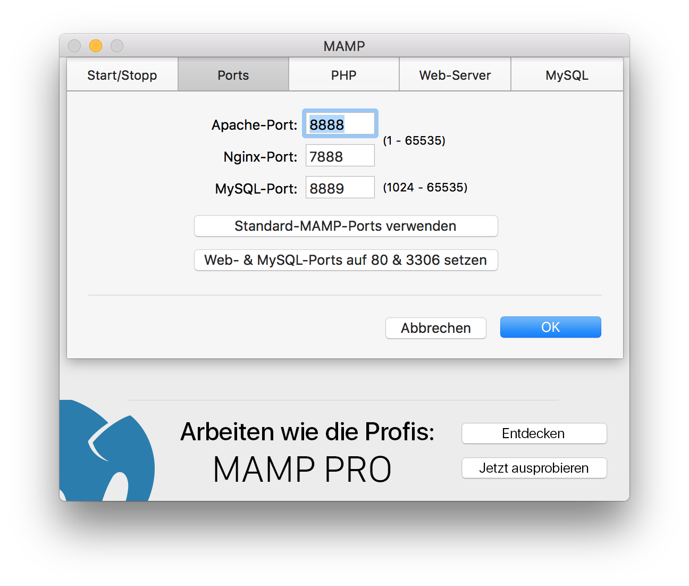
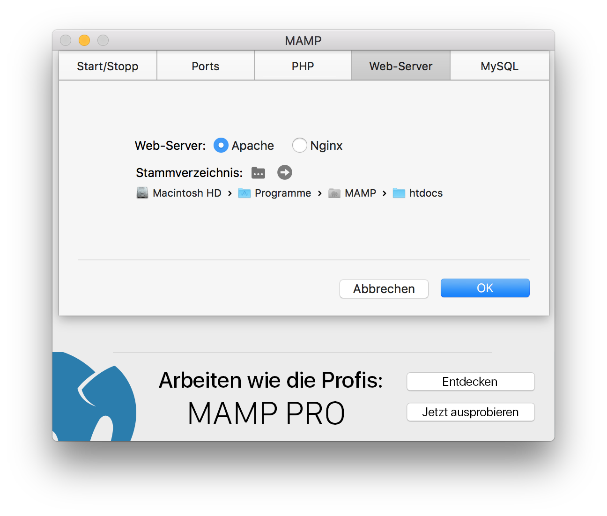

Öffnen Sie das Terminal und schreiben folgenden Befehl:/Applications/MAMP/Library/bin/mysqladmin -u root -p password <NEUESKENNWORT>
Anstelle von <NEUESKENNWORT> müssen Sie das gewünschte Kennwort eingeben.
Bedenken Sie aber, dass dannach auch das Kennwort für phpMyAdmin und andere Skripte, welche unter MAMP laufen, geändert werden muss. Das Kennwort für phpMyAdmin kann in der Datei /Applications/MAMP/bin/phpMyAdmin/config.inc.php geändert werden.
Sie können die Ports im Einstellungsdialog ändern:

In der Standardeinstellung sollten PHP- und HTML-Seiten in den Ordner htdocs, welcher sich im Ordner /Programme/MAMP befindet, kopiert werden. Dieser Ordner wird auch "Document Root" genannt. Den Pfad für den Dokument Root können Sie jederzeit im Programm MAMP unter Einstellungen ändern:

Sie haben wahrscheinlich den Apache-Port kleiner als 1024 eingestellt. Bei einem Unix-System, wie Mac OS X, benötigen Sie root-Rechte um IP-Dienste mit Ports kleiner als 1024 zu starten.